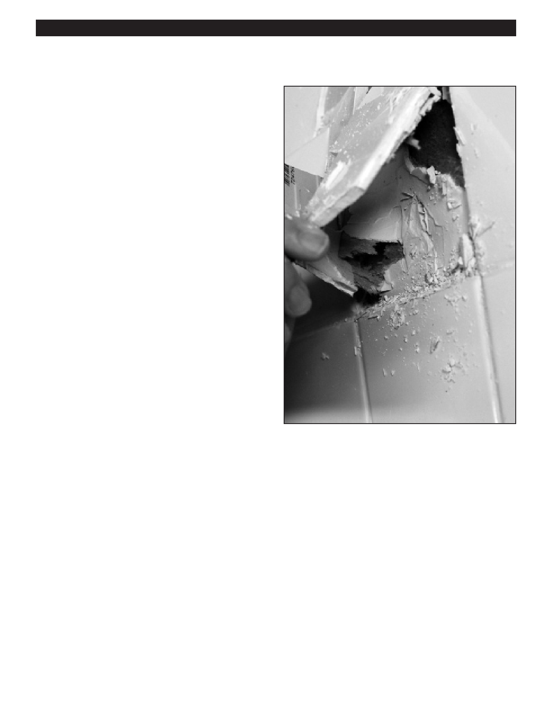

PA RT I C I PA N T R E S O U R C E G U I D E
Tile: Replacing Tile (continued)
Before removing old tile, scarpe the grout from
in-between the tile(s) to be removed and the
surrounding ones that will be kept to prevent
damage to them while the original is removed.
How-to Steps
Step 1: Remove the Damaged Tile
1. Drill a row of holes and score a line with a hammer and
cold chisel. Or, break up the tile with the hammer and
cold chisel.
2. Use a pry bar along the chisel line to pull pieces of the
old tile. (After the first old or broken piece of the tile
comes out, the rest will come out like a snap.)
3. Scrape out the old adhesive, if possible, with a
putty knife.
Step 2: Install the Replacement Tile
1. Spread new adhesive with a notched trowel.
2. Center a replacement tile in the patch area.
3. Place a block of wood over the new tile to protect its
surface, then seat the tile evenly with the surrounding
surface. (You may have to tap it gently with a hammer.)
4. Let the adhesive set according to package directions.
Step 3: Apply Grout
1. Mix a small batch of grout.
2. Use a clean, wet sponge to force grout into the seams,
then wipe off the excess. Repeat until the joint is filled.
3. Scrub the tile with a clean cloth to remove any dried
and excess grout.
4. Seal the grout with grout sealer.
30